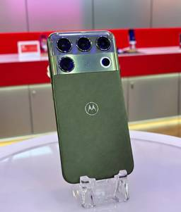
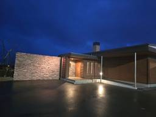
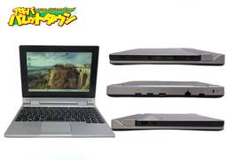
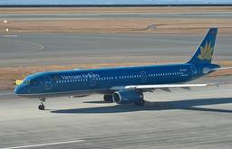
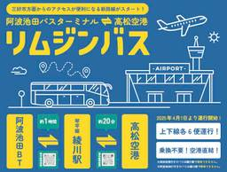
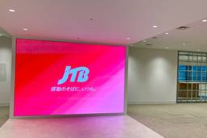
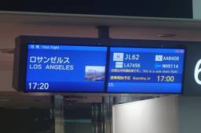
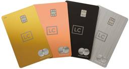
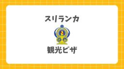
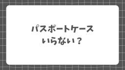

直近1週間の更新
10/10 (土)
LG’s RGB LED TV is good for certain situations, but an OLED is better The Verge
When it comes to TVs, the LG name has long been synonymous with OLEDs, continually leading Samsung and Sony as the top OLED manufacturer. But 2026 is all about RGB LED TVs. Almost every major company has released models with the new technology - including LG and its $3,600 75-inch Micro RGB evo MRGB95B that […]
31分前
AI agent makers are promising privacy — will they deliver? The Verge
At this year's OpenAI DevDay, CEO Sam Altman unveiled the company's new AI agent Dots - and told the crowd that the company wants to "set a new standard for privacy in frontier AI." OpenAI would spend the day taking veiled shots at Meta's Muse, its primary competitor, for failing to keep users' data safe. […]
31分前
The techlash has gone Hollywood The Verge
Hi, friends! Welcome to Installer No. 147, your guide to the best and Verge-iest stuff in the world. (If you're new here, welcome, I missed you all, and also you can read all the old editions at the Installer homepage.) I'm back from parental leave! Part time, anyway. Thanks to everyone who sent well wishes […]
2時間前
「iQOO Neo 12」が10月発表へ！空冷ファン内蔵で2K・185Hz対応のゲーミングスマホ デイリーガジェット
vivoのサブブランドであるiQOOから、次期ゲーミングスマートフォン「iQOO Neo 12」の詳細な仕様が明らかになりつつあります。著名リーカーのDigital Chat Station氏の報告に加え、iQOO公式W...投稿 「iQOO Neo 12」が10月発表へ！空冷ファン内蔵で2K・185Hz対応のゲーミングスマホ は デイリーガジェット に最初に表示されました。関連記事:iQoo「16T」は長時間プレイでも性能が落ちにくい。上位機種だけの内蔵冷却ファンを搭載する高負荷スマホになる可能性iQooから小型タブレット！日本上陸は？2nm「Snapdragon 8 Elite Gen 6」搭載でiQoo 16と同時発表かiQoo「15T」「Pad 6 Pro」が中国で発表！Dimensity 9500＋8,000mAhと13.2インチ4Kタブの新フラッグシップ
3時間前
The Telo MT1 is a big truck trapped in a tiny truck’s body The Verge
I'm bouncing down the road in San Carlos, California, zipping past behemoth tech companies like EA and Oracle, in America's smallest electric truck. The Telo MT1 (which stands for "mini truck") unquestionably turns heads because it looks so remarkably different from everything else on the market right now. It has a nearly cab-over design, meaning […]
3時間前
The director of Fjord takes the ‘risky position’ of moderator The Verge
Cristian Mungiu's sixth feature, Fjord, concerns a family on trial. They seem like good people, God-fearing. They've just moved from Romania to a small hamlet nestled in the fjords of rural Norway. There is Mamma (Renate Reinsve), Tata (a bald and bespectacled Sebastian Stan), and their passel of children. They are an openly religious and […]
3時間前

iPhone Duoで注目度アップの折りたたみスマホ。僕が横開きを選ばない理由 ギズモード・ジャパン
折りたたみはコンパクトさを重視。iPhone Duoが発売され注目度が上昇中の折りたたみスマホですが、製品発表の映像を見て思ったのが「折りたたむなら、もっと小さくなってほしい」ということでした。開くとタブレットのように使える横開きのメリット…
3時間前

ニューカラーにニューイヤホン。秋はJBLが豊作の季節なんです
ギズモード・ジャパン
グリーン、良いッ！先日、JBLから新しいワイヤレススピーカー「JBL COVE」が発表されました。ストリーミング派にはかなり嬉しい、そして音も良い、贅沢な時間が味わえるスピーカーに仕上がっていましたよ。と同時に、多くの新製品が同じタイミング…
3時間前

スーッと通せばムラなくストレートに。パナソニックから、朝の支度が変わるヘアアイロン登場 ギズモード・ジャパン
パナソニックの新ヘアアイロン「ストレートアイロン ナノケア」を体験。3Dスムースプレートと高浸透ナノイーで、バタバタする朝もコツいらずでムラのないサラサラなストレートヘアがスピーディーに完成します。
4時間前
「HMD Pulse 2T Pro」の仕様がリーク！背面サブ画面と6000mAhバッテリー搭載の独自スマホ デイリーガジェット
HMDの次期スマートフォン「HMD Pulse 2T Pro」に関する詳細なスペック情報がリークされました。背面に搭載されたサブディスプレイと6,000mAhの大容量バッテリーを組み合わせることで、実用性と独自性を両立し...投稿 「HMD Pulse 2T Pro」の仕様がリーク！背面サブ画面と6000mAhバッテリー搭載の独自スマホ は デイリーガジェット に最初に表示されました。関連記事:ソニーがPS5新ヘッドセット「PULSE」「PULSE Edge」を発表！大型平面磁界ドライバー搭載HMDの低価格スマホ「Asha 305」リーク情報で新OS「Pulse OS」が判明！Androidを使わない選択かHMDが『Asha 305』を14年ぶりに復活か、Nokiaの低価格タッチケータイの名を継ぐ4G対応の小型端末が認証情報に登場
5時間前
【スリランカ】コロンボを代表する仏教寺院・ガンガラーマ寺院へ訪問！見どころや入場料、服装の注意点を解説！ nrtlog.com
コロンボを代表する仏教寺院・ガンガラーマ寺院を実際に訪れた筆者が、本堂や博物館、安倍晋三元首相の肖像画、湖上のシーマ・マラカなどの見どころを写真付きで紹介！入場料や営業時間、服装の注意点、アクセス、お祭りの時期も解説！
5時間前

読むだけじゃない。使い方が広がる、話題の「電子ペーパーガジェット」 1 ギズモード・ジャパン
1 ギズモード・ジャパン
読むだけでなく書く・仕事に使うなど用途が広がる、話題の電子ペーパーガジェット3選を紹介します。目に優しく便利な最新端末の魅力とは。
5時間前

映画『マインクラフト』の大ヒットに続け。Xboxが映画・ドラマを手掛ける新部門「XP」を設立 ギズモード・ジャパン
Xboxが映画やドラマ、関連グッズなど、ゲーム以外のエンターテインメント事業を統合する新部門「XP」の設立を発表しました。映画『マインクラフト／ザ・ムービー』の大ヒットも記憶に新しいところですが、Xboxはゲームの枠を越えたエンターテインメ…
5時間前
アメリカン・エキスプレス、センチュリオン・ラウンジを拡充 ニューアークやヒースローに新設
TRAICY（トライシー）
アメリカン・エキスプレスは、センチュリオン・ラウンジを4か所新設・増設する。 ニューヨーク/リバティ、ロンドン/ヒースローで新設するほか、フィラデルフィアとヒューストンでは既存のラウンジを拡張する。 ニューアーク・リバテ […]投稿 アメリカン・エキスプレス、センチュリオン・ラウンジを拡充 ニューアークやヒースローに新設 は TRAICY（トライシー） に最初に表示されました。
5時間前

「漢王 M10C 第2世代」が10月15日発表！世界初「Kaleido 4」搭載のカラー電子ペーパー デイリーガジェット
中国のデバイスメーカーである漢王科技（Hanvon）は、新型のカラー電子ペーパー端末「M10C 第2世代」を2026年10月15日に発表します。本機は「世界初のE Ink Kaleido 4搭載カラーオフィスタブレット」...投稿 「漢王 M10C 第2世代」が10月15日発表！世界初「Kaleido 4」搭載のカラー電子ペーパー は デイリーガジェット に最初に表示されました。関連記事:Kaleido 3カラーE Ink・52FPS対応の6.13型スマホ「Bigme Hibreak Plus」が3万円台！Android 14・4G Dual SIM搭載E Inkカラースマホ「Bigme HiBreak Plus」が登場！52fps＋スタイラス対応で目に優しく読書も快適で249ドルAppleの整備済品にiPadシリーズが大量入荷【iPad Pro/iPad mini/無印ほか】
6時間前

オフロード車の子ども。125ccのミニトラックでアウトドアに繰り出せ ギズモード・ジャパン
こう見えて中身はゴーカートだって。たとえばファミコンなどのゲーム機がミニサイズになったり、掃除機がハンデイーになったりPCが弁当箱状になったり、大きかったデバイスが小型化しても実用的なのは魅力がありますよね。乗り物も同じで、モンキーのような…
6時間前

【本日みつけたお買い得品】3:2で縦に広いプログラマー向け4Kモニターが2万1,509円引き。Amazonセール PC Watch
Amazonで、ベンキューの28.2型プログラミング向けモニター「RD280U」が、直近価格から2万1,509円引きの7万9,400円で販売中だ。
6時間前

水や空気を使って発電。防災を変えてくれそうな変わり電池たち ギズモード・ジャパン
水や空気に触れるまで放電せず半永久保存できる「紙電池」と「空気電池」をご紹介。防災の常識を変える次世代バッテリーの魅力や活用法を解説します。
6時間前

【本日みつけたお買い得品】Mac向け5Kモニターが2万1,836円引き。Amazonでセール中 PC Watch
Amazonで、ベンキューの27型から31.5型までのモニターがセール価格で販売されている。いずれもMac向けで、27型5Kの「MA270S」は、直近価格から2万1,836円引きの15万9,800円で販売中だ。
6時間前
My brief romance with an AI bird feeder The Verge
It started off promising enough. Dozens of tiny, colorful birds were drawn to my garden just a few weeks after I mounted a $350 $269 Kiwibit Bird Feeder 2 Pro. "Looks like Great Tit!" read the first AI-driven alert sent to my phone. "Looks like Eurasian Blue Tit!" read another. I chuckled, still waiting for […]
7時間前
国立健康危機管理研究機構、ロシア・イルクーツク州の重症肺炎事例を公表 日本への影響は限定的 TRAICY（トライシー）
国立健康危機管理研究機構（JIHS）は、ロシア・イルクーツク州で発生した原因不明の重症肺炎の事例について公表した。現時点の情報から、日本への影響は限定的としている。 ペスト防疫研究所の職員1名が重度の肺炎のため9月29日 […]投稿 国立健康危機管理研究機構、ロシア・イルクーツク州の重症肺炎事例を公表 日本への影響は限定的 は TRAICY（トライシー） に最初に表示されました。
7時間前
「Nintendo Switch 2」新モデルがFCC通過！自力バッテリー交換対応で通信性能も変化 デイリーガジェット
EU（欧州連合）の「修理する権利」に対応し、バッテリー交換が容易になった「Nintendo Switch 2」および各種コントローラーが、米連邦通信委員会（FCC）の認証を通過しました。ヨーロッパや米国での動きを受け、日...投稿 「Nintendo Switch 2」新モデルがFCC通過！自力バッテリー交換対応で通信性能も変化 は デイリーガジェット に最初に表示されました。関連記事:任天堂「バーチャルボーイ – Nintendo Classics」に5タイトル追加！『V-テトリス』『ジャック・ブラザーズ』など解禁Switch 2「Joy-Con 2」のドリフト不安を20ドルで解消！GuliKitのTMR交換キットがはんだ付け不要で登場Nintendo Switch 2用「Joy-Con 2」に新色が登場。黒×パステルの大人なデザイン、マウス操作対応で99.99ドル。2月12日発売へ
8時間前

Amazonのちいかわキッズタブレット、大きいお友達も大興奮。Playストア対応だ！ ギズモード・ジャパン
Amazonの新ブランドタブレット「ちいかわキッズタブレット」をレビュー。Google Play対応で大人が大興奮の理由やスペックを解説。
8時間前

見て見ぬ振りしていた汚れまで。お風呂掃除が楽しくなる高水圧ガン ギズモード・ジャパン
見て見ぬふりしていたお風呂の汚れがスッキリ！電源不要のアイメディア高水圧ガンで、面倒な掃除が楽しくなる秘密をご紹介します。
8時間前
【中国・重慶】実際に行って分かった見どころと必要日数！3泊4日のモデルコースや夜景、ドローンショーの鑑賞スポットを徹底解説！ nrtlog.com
中国のサイバーパンク都市・重慶。実際に訪れた筆者が観光の見どころや必要日数、3泊4日のモデルコースを徹底解説！夜景やドローンショーの穴場鑑賞スポット、重慶へのお得な行き方や Trip.com を活用した予約方法も紹介！
8時間前

【本日みつけたお買い得品】8万円引き！31.5型や26.5型の4KゲーミングモニターがAmazonで特価 PC Watch
Amazonで、ベンキューのゲーミングモニターがセール価格で販売されている。31.5型4Kの「MOBIUZ EX321UX」は、直近価格から8万1,109円引きの15万9,800円で販売中だ。
8時間前
カンタス航空とニュージーランド航空、コードシェア終了 TRAICY（トライシー）
カンタス航空とニュージーランド航空は、共同運航（コードシェア）を2027年4月6日をもって終了する。 両社は、オーストラリアとニュージーランド両国の国内線を対象に、相互にコードシェアを実施している。 カンタス航空では、翌 […]投稿 カンタス航空とニュージーランド航空、コードシェア終了 は TRAICY（トライシー） に最初に表示されました。
8時間前
JTB、「タイムセール」を10月21日まで開催中 シンガポール4日間10万円台からなど
TRAICY（トライシー）
JTB（ジェイティービー）は、国内・海外旅行の「タイムセール」を10月8日から21日まで開催している。 海外ツアーは、ルックJTB MySTYLEの宿泊ホテルまたは航空便限定ツアーが対象。東京/成田・東京/羽田発の例では […]投稿 JTB、「タイムセール」を10月21日まで開催中 シンガポール4日間10万円台からなど は TRAICY（トライシー） に最初に表示されました。
8時間前
「Retro Song Bird」発表！ゲームボーイソフトを挿すだけで名曲が聴ける専用プレイヤー デイリーガジェット
Bird Cartel GamesのBJ氏がデザインした「Retro Song Bird」は、引き出しの奥で眠っているゲームボーイのカートリッジに新たな役割を与えるデバイスです。カートリッジを本体に挿入するだけで、ゲーム...投稿 「Retro Song Bird」発表！ゲームボーイソフトを挿すだけで名曲が聴ける専用プレイヤー は デイリーガジェット に最初に表示されました。関連記事:世界初の携帯電話「DynaTAC 8000X」を模したモバイルバッテリーが登場！最大165W出力とトランシーバー機能を備えて89ドル。Retro Games「THEA1200」の発売を再延期！Amiga 1200レプリカは2026年12月4日へ約半年の遅れ8BitDo「Retro 18 Numpad Xbox版」が誕生！レトロなLEDディスプレイで電卓にもなる透明グリーンの本格メカニカル仕様。
9時間前

【本日みつけたお買い得品】AmazonでRTX Spark搭載MSIノートが予約開始。109万9,800円から PC Watch
Amazonで、MSIのRTX Spark搭載ノートPC「Prestige N16 Flip AI+ C1XM」の予約販売が開始されている。価格は109万9,800円からで、発売予定日は10月31日。
10時間前

ラグジュアリーカード チタンとANAダイナースを比較！年会費・マイル・特典の違い マイルの錬金術師アドバンス
「本記事はプロモーションを含みます」 ラグジュアリーカード チタンとANAダイナースを比較する際は、年会費に加えて、ANAマイルの貯まり方と実際に利用する特典を確認すると違いが分かります。 通常ショッピングをANAマイル […]
10時間前
JAL、国際線特典航空券のタイムセールを実施 欧米へ片道16,100マイルから TRAICY（トライシー）
日本航空（JAL）は、JAL国際線特典航空券を対象としたタイムセールを10月8日から31日まで実施している。 片道あたりの必要マイル数は以下の通り。左からエコノミークラス、プレミアムエコノミークラス、ビジネスクラスの順。 […]投稿 JAL、国際線特典航空券のタイムセールを実施 欧米へ片道16,100マイルから は TRAICY（トライシー） に最初に表示されました。
10時間前
フライドバイ副操縦士、自爆攻撃計画 機長をおので襲撃＝UAE検察 Aviation Wire
アラブ首長国連邦（UAE）のハマド・サイフ・アル・シャムシ検事総長は、ドバイを拠点とするLCCフライドバイ（FDB/FZ）のドバイ発テルアビブ行きFZ1073便（ボーイング737 MAX 8、登録記号A6-FKF）で現 […]
10時間前
阪九フェリー、新門司〜神戸航路「やまと」を欠航 2027年1月3日まで TRAICY（トライシー）
阪九フェリーは、新門司〜神戸航路を運航する「やまと」の機関整備に伴い、欠航することを明らかにした。 点検作業により詳細な状況を確認した結果、早期の復旧は困難であると判断したという。欠航期間は10月6日から2027年1月3 […]投稿 阪九フェリー、新門司〜神戸航路「やまと」を欠航 2027年1月3日まで は TRAICY（トライシー） に最初に表示されました。
10時間前
手間いらず、最大約445万人の宿泊予約情報が流出の可能性 不正アクセスで TRAICY（トライシー）
手間いらずは、宿泊施設向け予約管理システム「TEMAIRAZU」への不正アクセスについて、調査状況と対応を発表した。 最大で約445万人分の宿泊予約情報が、第三者に閲覧または取得された可能性があるとしている。対象となるの […]投稿 手間いらず、最大約445万人の宿泊予約情報が流出の可能性 不正アクセスで は TRAICY（トライシー） に最初に表示されました。
10時間前
「Redmi Note 17 Pro 5G」が登場！8340mAh電池と有機EL搭載のアウトドア向けスマホ デイリーガジェット
Xiaomiの「Redmi Note」シリーズは、高いコストパフォーマンスで人気を集めています。最新モデルとなる「Redmi Note 17 Pro 5G」は、従来の汎用的な仕様から一歩踏み出し、アウトドアでの利用に特化...投稿 「Redmi Note 17 Pro 5G」が登場！8340mAh電池と有機EL搭載のアウトドア向けスマホ は デイリーガジェット に最初に表示されました。関連記事:「Redmi Note 17 Pro Max」欧州Amazonに599ユーロで掲載！9,210mAh搭載、スマートウォッチ無料付属も「Redmi Note 17」シリーズ、ベトナムで4モデル展開へ。Pro Maxの512GB版はRAM 8GB止まりと判明シャオミの「Redmi Note 17 Pro Max」は9210mAh＋microSD 2TB対応！充電も容量も気にせず使える一台
11時間前

【機能別9モデル】米ギズモードが選ぶ、2026年ベスト・ワイヤレスイヤホン ギズモード・ジャパン
今年も残すところ3ヶ月弱。じわじわと年末のことが頭をよぎってきました。クリスマス、おせち、今年はどうする？クリスマスプレゼントやお正月の過ごし方など、これから考えなちゃいけないことは山ほどありますが、ガジェット好きが今考えるのは、今年のベス…
11時間前
リゾートトラスト、不正アクセスで個人情報漏えい 会員とカハラ横浜の予約者が対象 TRAICY（トライシー）
リゾートトラストは、ウェブサイトが外部の第三者から不正アクセスを受け、サーバーに保管されていた個人情報の一部が外部に漏えいしたと発表した。 10月5日午後8時半頃から11時半頃にかけて、ウェブサイトのシステムに異常な作動 […]投稿 リゾートトラスト、不正アクセスで個人情報漏えい 会員とカハラ横浜の予約者が対象 は TRAICY（トライシー） に最初に表示されました。
11時間前
「Good MONday 浅草」、10月1日開業 全室30平米以上 TRAICY（トライシー）
JHATは、「Good MONday 浅草」を10月1日に開業した。 hotel MONdayグループの41施設目で、ホテルブランド「Good MONday」シリーズの第1号施設となる。ブランドコンセプトは「Urban […]投稿 「Good MONday 浅草」、10月1日開業 全室30平米以上 は TRAICY（トライシー） に最初に表示されました。
11時間前

Amazon Prime Videoの広告を追加課金なしでカットする方法 ギズモード・ジャパン
Amazon Prime Videoの広告を追加課金なしでカットする裏技を紹介。スマホやタブレットでの事前ダウンロードを活用して、広告なしで動画を楽しむ方法を分かりやすく解説します。
11時間前

「Motorola Signature 27」が発表！最新SoCと2億画素カメラ搭載の7年保証スマホ デイリーガジェット
モトローラが、インドで開催された「India Mobile Congress 2026」にて、次世代の最上位スマートフォン「Motorola Signature 27」を公開しました。世界初となるQualcommの最新S...投稿 「Motorola Signature 27」が発表！最新SoCと2億画素カメラ搭載の7年保証スマホ は デイリーガジェット に最初に表示されました。関連記事:Motorola「Signature 27」は9月22日発表！次世代のSnapdragon 8系チップを搭載する第一陣になる可能性Motorola「Signature 27」のティザーが欧州公式サイトに掲載！初代に続く特別仕様の存在が早くも示唆モトローラから「Motorola Signature」が登場！Snapdragon 8 Gen 5搭載で6.99mmの極薄ボディを実現し7年間のOS更新を保証
11時間前
ZIPAIR Tokyo、東京/成田〜シンガポール線を期間増便 12月に TRAICY（トライシー）
ZIPAIR Tokyoは、東京/成田〜シンガポール線を、12月の一部期間に増便する。 12月2日から16日にかけての月・水・土・日曜に午後便を追加し、1日最大2往復とする。旺盛な需要に対応するものとしている。 航空券の […]投稿 ZIPAIR Tokyo、東京/成田〜シンガポール線を期間増便 12月に は TRAICY（トライシー） に最初に表示されました。
12時間前
ANBERNIC「RG DDS」情報公開！2画面とタッチペン搭載で今後の国内展開が期待される注目モデル デイリーガジェット
ANBERNIC（安伯尼克）は10月9日、新型のデュアルスクリーン携帯ゲーム機「RG DDS」の情報を公開しました。SoCにQualcommの「Snapdragon G2 Gen 2」を採用し、本体に収納可能な伸縮式タッ...投稿 ANBERNIC「RG DDS」情報公開！2画面とタッチペン搭載で今後の国内展開が期待される注目モデル は デイリーガジェット に最初に表示されました。関連記事:携帯ゲーム機のAnbernic公式ストアで新春セール！最新機種まで全体安く携帯ゲーム機のAnbernic公式ストアで独身の日セール！最安値が多数携帯ゲーム機のAnbernic公式ストアで大規模セール中！【AndroidやLinux搭載ゲーム機が最大31%OFFに】
13時間前
コンラッド東京、芸術の秋がテーマのアフタヌーンティーを開催 10月1日から TRAICY（トライシー）
コンラッド東京は、「アート・オブ・オータム・アフタヌーンティー」を10月1日から11月30日まで開催する。 シャインマスカットや洋梨、紫芋、いちじくなど秋の味覚を主役に、アンティークジュエリーやカメオ、封蝋から着想を得た […]投稿 コンラッド東京、芸術の秋がテーマのアフタヌーンティーを開催 10月1日から は TRAICY（トライシー） に最初に表示されました。
13時間前

バッテリを外したら、代わりにファンが付いた。GPD WIN Max 3の“着脱式”はただのギミックじゃありません 1 PC Watch
ノートPCを選ぶとき、私たちはいつも何かを諦めてきました。軽さを取ればパワーが足りず、パワーを取れば重くてバッテリが持たない。どちらを優先するかは買う時に一度決めたら、そのマシンを手放すまで変えられない。それが当たり前だと思っていないでしょうか。
15時間前

【朗報】Windows、最新アプデで「起動時消費メモリ」ダイエット成功 ギズモード・ジャパン
あゝ、こんなにも嬉しいWindows Updateは初めてです。メモリの価格高騰が続いている今日このごろですが、マイクロソフトがやってくれました。記事執筆時点で最新アップデートとなるWindows 11 26H2において、起動時の消費メモリ…
15時間前
「スマイルホテル八王子南口駅前」、10月16日開業 八王子市初出店 TRAICY（トライシー）
ホスピタリティオペレーションズは、「スマイルホテル八王子南口駅前」を10月16日に開業する。 建物は新築。客室はダブル、ツイン、ユニバーサルの3タイプ全114室で、全館禁煙とする。室内には有線LANとWi-Fi、洗浄機能 […]投稿 「スマイルホテル八王子南口駅前」、10月16日開業 八王子市初出店 は TRAICY（トライシー） に最初に表示されました。
15時間前
Decade-old RAM is making a comeback The Verge
CPU makers have noticed that the seemingly unending RAM price hikes are making it tough for a lot of us to upgrade our PCs. Their solution? A return to last-gen DDR4 RAM. Intel and AMD are making new CPUs that'll support the older, more affordable type of memory. On Friday, Gigabyte announced that two of […]
16時間前

1,180円からの静音3ボタンマウス、エレコムが接続方式3種で展開
PC Watch
エレコムは、シンプルなシンメトリーデザインを採用したBluetooth/2.4GHz無線/有線の3種類から選べる静音設計の3ボタンマウスを10月上旬より順次発売する。
16時間前

【今すぐ読みたい！人気記事】「Windows＋V」から始める快適クリップボード生活 - PC Watch PC Watch
Windowsでは「Ctrl＋C」と「Ctrl＋V」のショートカットキーでクリップボードのコピー&ペースト機能を利用できることがよく知られている。Windows 10以降は、さらにWindowsキーを使った「Windows＋V」でクリップボードの履歴を表示する機能も加わった。
16時間前
Anthropic’s AI gave Philadelphia police a fake tip about an unsolved homicide The Verge
An Anthropic AI model provided false information about an unsolved homicide to a Philadelphia Police Department (PPD) tipline, according to a report from 6abc. In a statement released on Friday, the PPD said the AI model sent the tip through PhillyUnsolvedMurders.com on July 18th, but the investigators never reviewed it because it was marked as […]
16時間前

【今すぐ読みたい！人気記事】SSD換装+OS丸ごとデータ移行を無料ソフト「Clonezilla」でやろう - PC Watch 2 PC Watch
どんなに高級なノートPCであっても長く使い続けているとだんだんと不満を持ってくるようになる。CPUの性能低下はPCそのものを交換するしか手はないが、ストレージの残容量が減ってくると特にストレスが溜まる。それに伴い性能が低下するという問題が発生する場合がある。
16時間前
2026年10月マリオットボンヴォイ紹介で最大＋1万ポイント！紹介のやり方・紹介者ポイントの内訳を徹底解説 旅中毒
こんにちは！旅中毒(@Tabichudoku）です。たび(^з^)-☆です！ マリオットグループホテルにお得宿泊できる『マリオットアメックス』 こちらのカードを作る際、必ず！マリオットボンヴォイ登録（登録料無料）が必要に…The post 2026年10月マリオットボンヴォイ紹介で最大＋1万ポイント！紹介のやり方・紹介者ポイントの内訳を徹底解説 first appeared on 旅中毒.
16時間前
2026年10月⭐︎アメックスゴールドプリファード紹介コードで14万ポイント！最もお得に申し込む紹介プログラムとは？ 旅中毒
こんにちは！旅中毒(@Tabichudoku）です。たび(^з^)-☆です！ 旅行・ダイニング関連・空港ラウンジやプライオリティパスの無料付帯などの特典が受けられる「アメックス・ゴールド・プリファード」 新規入会をご検討…The post 2026年10月⭐︎アメックスゴールドプリファード紹介コードで14万ポイント！最もお得に申し込む紹介プログラムとは？ first appeared on 旅中毒.
16時間前

全面アルミで1.18kg、180度開く14型ノート「Swift Air 14」 2 PC Watch
日本エイサーは10月9日、ノートPC Swiftシリーズより、14型ノートPC「Swift Air 14(SFA14-I31)」を発売した。直販価格はCore 3 304搭載モデルが13万9,800円、Core 5 320搭載モデルが14万7,800円。
16時間前

写真も動画も声もまとめて0.74Bで検索。ローカルRAG向け「EmbeddingGemma 2」 58 PC Watch
録りためた動画の中の“あの場面”を、声で吹き込んだメモから探し出す。こうした検索をインターネットなしで実行できるAIモデル「EmbeddingGemma 2」を、Googleが10月6日(現地時間)に無償公開した。写真や動画、音声、文字、コードを1つのモデルで検索でき、ローカルRAG(検索拡張生成)では、資料を探す処理を受け持つ。オープンウェイト(モデルの重み)はHugging FaceとKaggleからダウンロードでき、Apache 2.0ライセンスの下で商用利用も認められる。
17時間前

エポスカードはポイントサイト経由の入会がお得！最大16,000円相当のポイント獲得！ 陸マイラー ピピノブのANAのマイルで旅ブログ
エポスカードはポイントサイト経由の入会がお得！最大16,000円相当のポイント獲得！ エポスカード（EPOS CARD）の入会キャンペーンがお得です。最大で16,000円相当のポイントを獲得することができます。入会キャン ...
18時間前
Ohio blogger found guilty of harassment for sending Shrek nude to senator The Verge
A jury found an Ohio political blogger guilty of telecommunications harassment after he sent an explicit image of Shrek to a Republican state senator. On Friday, a judge ordered DJ Byrnes, owner of political commentary blog The Rooster, to pay a $200 fine, according to a report from the Columbus Dispatch. Byrnes texted Ohio Sen. […]
18時間前
‘Pure insanity’: Mathematicians will need years to make sense of OpenAI’s latest drop 1
The Verge
"Staggering." "Overwhelming." "Unprecedented." "Surreal." "Pure insanity." Those were among the descriptions more than three dozen mathematicians reached for in conversations with The Verge as they tried to make sense of the flood of mathematical results OpenAI abruptly dropped on the field this week. Amid the awe, excitement, and uncertainty over the sheer scale of the […]
18時間前
JR九州、約130万件のメールアドレス漏えいの可能性 IDCフロンティアへの不正アクセスで TRAICY（トライシー）
JR九州は、IDCフロンティアで発生した不正アクセスに伴い、利用者の電子メールアドレスが漏えいした可能性があると発表した。 影響を受けているのは、JR九州Web会員向けの「JR九州メールマガジン」で、現在配信ができない状 […]投稿 JR九州、約130万件のメールアドレス漏えいの可能性 IDCフロンティアへの不正アクセスで は TRAICY（トライシー） に最初に表示されました。
1日前
10/9 (金)

高速版「Qwen-Image-2.1-Turbo」重み公開、画像生成8ステップで完了 26 PC Watch
画像の生成と編集を、わずか8ステップでこなすAIの高速版が無料でダウンロードできるようになった。AlibabaのAI開発チームQwenは10月9日(日本時間)、画像生成AI「Qwen-Image-2.1-Turbo」をオープンウェイト(モデルの重み)として公開した。配布先はHugging FaceとModelScopeだ。ただし、モデルを無償で利用できるのは研究・評価目的に限られ、商用利用には別途契約が必要。
1日前
JAL Pay会員向け格納庫見学 羽田・伊丹で航空教室100人招待 Aviation Wire
日本航空（JAL/JL、9201）は、スマートフォン決済サービス「JAL Pay（JALペイ）」の会員向けに、羽田空港と伊丹空港で格納庫見学などを楽しめる「オリジナル航空教室」を開く。抽選で計50組100人を無料招待す […]
1日前
ANAとシンガポール航空、行き帰りで使い分け 国交60年でMICE誘致強化 Aviation Wire
シンガポール政府観光局（STB）やシンガポール航空（SIA/SQ）などは10月8日、日本とシンガポールの外交関係樹立60周年を記念するビジネス交流イベントを都内の在日シンガポール大使館で開いた。国際会議や展示会などの誘 […]
1日前

スマホ全盛期のいま、ガラケーの時代がまたやってくるかも？ 1
ギズモード・ジャパン
スマホ疲れやスクロール中毒から脱却したい方へ。現代の便利さを残しつつ、最低限の機能に絞った折りたたみ型の新端末「Light Flip」の魅力をご紹介します。
1日前

Apple、10月13日に新製品発表イベントを予告。スマートホームがやってくる ギズモード・ジャパン
まだまだ祭りは終わらない！iPhone 18 Pro、AirPods 5、Apple Watch Series 12、Ultra 4などなど、新製品が目白押しのAppleから、さらなるイベント開催のお知らせです。Appleは現地時間の10月…
1日前
中国・大型連休「国慶節」、海外旅行は長期化・遠方への予約が増加、国内旅行1回あたり消費額は4年ぶり低水準 トラベルボイス
ロイター通信によると、2026年の国慶節休暇（2026年10月1日から7日）の中国の国内旅行者は延べ8億2600万人となり、総旅行支出額は7383億8000万元（約17兆円）に。
1日前
外務省、サウジアラビア南部の危険レベルを引き上げ ホーシー派攻撃強化受け TRAICY（トライシー）
外務省は、サウジアラビアの危険情報を更新し、イエメンと国境を接する南部地域の危険レベルを引き上げた。 アシール州、ナジュラーン州、ジャーザーン州の全て（レベル3であるイエメンとの国境地帯を除く）とマッカ州のうちアシール州 […]投稿 外務省、サウジアラビア南部の危険レベルを引き上げ ホーシー派攻撃強化受け は TRAICY（トライシー） に最初に表示されました。
1日前

スマホの続き、PCでどうぞ。グーグルの新PC「Googlebook」でできること ギズモード・ジャパン
Googleの新PC「Googlebook」の強みやスマホ連携、Gemini活用法を解説。スマホとPCの連携で作業効率を上げる魅力をご紹介します。
1日前
ピーチ、旅程表メールに障害 委託先クラウドにランサムウェア攻撃 Aviation Wire
ピーチ・アビエーション（APJ/MM）は10月9日、予約関連のメール配信に利用しているIDCフロンティア（東京・千代田区）のクラウドサービスがランサムウェア攻撃を受け、旅程表メールなどの送信に遅延や不達が生じたと発表し […]
1日前
国交省、宇都宮ライトレールの西側延伸計画を認定 TRAICY（トライシー）
国土交通省は、宇都宮市と芳賀町、宇都宮ライトレールから申請されていた軌道運送高度化実施計画を認定したと発表した。 地域公共交通の活性化及び再生に関する法律に基づくもので、この認定により、計画に定められた軌道運送高度化事業 […]投稿 国交省、宇都宮ライトレールの西側延伸計画を認定 は TRAICY（トライシー） に最初に表示されました。
1日前
国交省、大阪IRのインバウンド誘致に具体策求める、プロモーションと変化するニーズへの対応で トラベルボイス
国土交通省は、大阪・夢洲IRの2025年度の計画実施状況を評価。詳細設計の完了や建設工事の着手に一定の評価を示す一方、需要推計の精緻化や訪日客向け集客施策の具体化、変化するニーズに応じた見直しの必要性を指摘した。
1日前

iPhone Air 2は初代よりさらに薄くなるらしいぞ ギズモード・ジャパン
Apple史上最薄のiPhoneになる？つい先日、韓国のブロガーyeux1122氏が「iPhone Air 2の厚さは約5.2mm」になると情報発信しました。ということは、初代iPhone Airより0.4mm薄くなり、さらに折りたたみ式の…
1日前

DS？ いいえ、Androidです。約3万5000円の二画面ゲーム機が登場 1 ギズモード・ジャパン
パカッと開けば、画面がふたつ。ニンテンドーDSを思い出した人もいるのでは？こちらは中国のRetroid（レトロイド）「Pocket Duo Lite Plus」。懐かしい姿をしていますが、中身はAndroidの携帯ゲーム機です。このLite…
1日前

山形・鶴岡「食文化創造都市」はどう生まれた？ ガストロノミーツーリズムを育てた料理人と地域の力【コラム】 トラベルボイス
ガストロノミーツーリズム最前線を柏原光太郎氏が解説。山形県鶴岡市とイタリア料理店「アル・ケッチァーノ」の歩みから、地域ぐるみで食を観光資源に育てる仕組みを考察。
1日前
アボロン、エアバス機110機を確定発注 TRAICY（トライシー）
航空機リース会社のアボロンは、エアバス機110機を確定発注した。 内訳は、エアバスA330-900型機35機とA320neoファミリー機75機。これにより、アボロンの総発注数はエアバスA330-900型機が114機、エア […]投稿 アボロン、エアバス機110機を確定発注 は TRAICY（トライシー） に最初に表示されました。
1日前
民泊エアビー、高級宿泊施設の取り組み再強化か、チェスキーCEOがホスト向けサミットで明らかに【外電】
トラベルボイス
米観光産業ニュース「Skift」によると、エアビーアンドビー（Airbnb）が再び高級宿泊施設市場への参入を強化。「Airbnb Luxe（ラックス）」プログラムあるいはそれに似たサービスの再開する動きを見せているという。
1日前
Googleマップのデータでみる食トレンド、東京では「お餅」が人気、海外で「抹茶」「ほうじ茶」への関心高まる トラベルボイス
Googleが過去1年間のGoogleマップのデータを分析し、世界10都市のグルメトレンドを発表した。抹茶等の注目カテゴリーや、ユーザー評価に基づく人気店リストも公開。
1日前
ノースアトランティック航空、パキスタン国際航空にボーイング787-9型機2機をリース TRAICY（トライシー）
ノースアトランティック航空とパキスタン国際航空は、ボーイング787-9型機のウェットリース契約を締結した。 イギリスとパキスタン間の複数都市間の運航を、11月初旬から開始する見通し。機材数は2機。 パキスタン国際航空のア […]投稿 ノースアトランティック航空、パキスタン国際航空にボーイング787-9型機2機をリース は TRAICY（トライシー） に最初に表示されました。
1日前

相次ぐサイバー攻撃被害。国家サイバー統括室が事業者に対策徹底を要請 21 PC Watch
大量の個人情報を扱う事業者のシステムへの不正アクセスにより、個人情報の漏洩事故が相次いでいる。これを受け、内閣官房国家サイバー統括室は10月9日、「不正アクセスによる漏えい等の事案を踏まえた対応について」を公表した。個人情報や機微な情報を扱う事業者に対し、対策の徹底を速やかに検討するよう求めている。
1日前

階段も登るし、ドアも閉める。カワサキの4脚ロボ「Home LEO」ができる子すぎる 2
ギズモード・ジャパン
人が乗せて、飛んで走れる4脚歩行型オフロードパーソナルモビリティ「CORLEO」で脚光を浴びたカワサキこと川崎重工。ロボット事業に、新たな動きが出ました。今回発表された「Home LEO」は、ヘルスケア分野のソーシャルロボット。家に住むおじ…
1日前

Windows App、リモートPC接続が正式提供に。職場アカウント不要 23 PC Watch
自宅や職場のPCに、クラウドPCと同じアプリからつなげるようになった。Microsoftは10月5日(米国時間)、Windows版「Windows App」でリモートPC接続機能の一般提供を開始したと発表した。Windows Appは、Microsoft Storeから無償で入手できる。
1日前

あいち航空ミュージアムでスペースジェット搬入イベント、観覧者を募集 AIRLINE web -月刊エアライン×航空旅行-
愛知県は、2026年6月から2027年1月末までリニューアル工事のため休館しているあいち航空ミュージアムにおいて、工事期間中の特別企画として「あいち航空ミュージアムSJ搬入イベント」を開催する。展示機であるスペースジェ […]The post あいち航空ミュージアムでスペースジェット搬入イベント、観覧者を募集 first appeared on AIRLINE web -月刊エアライン×航空旅行-.
1日前

第10世代Corei5搭載のNEC製中古ノートPCが税込19,800円！Panasonic製が38,500円ほかアキバパレットタウン週末セール品全まとめ デイリーガジェット
中古PC・サーバ販売のアキバパレットタウン。 こちらで10月10日（土）から、週末セールが開催されます！ 第10世代Corei5搭載、8/256GB SSD 、13.3インチ、Windows 11 Proという構成のNE...投稿 第10世代Corei5搭載のNEC製中古ノートPCが税込19,800円！Panasonic製が38,500円ほかアキバパレットタウン週末セール品全まとめ は デイリーガジェット に最初に表示されました。関連記事:第10世代Corei5搭載のNEC製中古ノートPCが税込16,500円！富士通製が19,800円ほかアキバパレットタウン週末セール品全まとめ第11世代Corei7搭載のLenovo製中古ノートPCが税込39,800円！Fujitsu製が19,800円ほかアキバパレットタウン週末セール品全まとめ第8世代Core i7搭載の東芝製中古ノートPCが19,800円！富士通製が24,800円ほかアキバパレットタウン週末セール品全まとめ
1日前

自分の色で読書しよう。着せ替えできる電子書籍リーダー「PocketBook Verta」 ギズモード・ジャパン
新作も発表したばかりのAmazon Kindleシリーズが依然として幅を利かせる電子書籍リーダー市場ですが、楽天koboやOnyx、Barnes & Nobleなど、さまざまなメーカーも電子書籍リーダーを販売しています。Amazonのエコシ…
1日前

ピーチ、ランサムウェア攻撃で旅程表メールに遅延 TRAICY（トライシー）
ピーチ・アビエーションは、予約関連メールの配信などで利用しているIDCフロンティアのクラウドサービスが第三者からのランサムウェア攻撃を受け、メール配信などが停止する障害が発生したと発表した。 攻撃は10月7日午前3時40 […]投稿 ピーチ、ランサムウェア攻撃で旅程表メールに遅延 は TRAICY（トライシー） に最初に表示されました。
1日前
ヤフートラベル、「JAL限定クーポン」を追加配布 最大2万円割引 TRAICY（トライシー）
LINEヤフーは、旅行予約サイト「Yahoo!トラベル（ヤフートラベル）」で、「JAL限定クーポン」の追加配布を10月9日正午から開始した。 日本航空（JAL）の航空券とホテルのセットプラン「ヤフーパック」が対象で、利用 […]投稿 ヤフートラベル、「JAL限定クーポン」を追加配布 最大2万円割引 は TRAICY（トライシー） に最初に表示されました。
1日前
ファイターズ、AI旅行予約サービスの運営会社と資本業務提携、北海道Fビレッジへのインバウンド誘客を強化 トラベルボイス
ファイターズ スポーツ＆エンターテイメント（FSE）は、AIワンストップ旅行予約サービス「TripToJapan.com」を展開する高輪トラベルグループと資本業務提携契約。Fビレッジへのインバウンド集客を強化していく。
1日前

カタログのバッテリ時間はなぜ実際と違う？JEITAが解説ガイド公開 3 PC Watch
カタログに載っているバッテリ動作時間と、実際に使ったときの持ち時間はなぜ違うのか――そんな疑問に業界団体が答えるコンテンツが登場した。電子情報技術産業協会(JEITA)のPC・タブレット事業委員会は10月9日、Webコンテンツ「JEITA バッテリ動作時間測定法ガイド」を公開した。ノートPCのバッテリ動作時間の測定法や数値の見方を解説するものだ。
1日前

ガチくんに! 第433回切り抜き「ガチくんにマーベル闘魂で対戦させてみた結果…」 PC Watch
※毎週木曜日にプロ格闘ゲームプレイヤーであるガチくんをパーソナリティに迎え、ストリートファイター6攻略企画「ガチくんに!」をTwitchとYouTubeで配信しています。レギュラー出演者はぷげら、奥村茉実。ここでは当日放送したおおまかな内容を紹介するとともに、YouTubeにアップロードした切り抜きとアーカイブの動画を掲載しています。
1日前

はたして「ナイキは終わったのか？」外野のノイズを吹き飛ばすスーパーシューズが登場 ギズモード・ジャパン
近ごろ「ナイキが昔ほどの元気がない」なんて話をよく耳にします。売上や株価がどうこうといったニュースもちらほらと聞こえてきますが、正直なところ、僕らギア好きにはそんな噂はどうでもいい話。この圧倒的な新作シューズを見せつけられたら、そんな雑音は…
1日前
【自腹レビュー】東急のツギツギの評判や口コミは？予約が取れないのは本当？3か月使った結果を正直に解説！ nrtlog.com
東急のホテルサブスク「ツギツギ」に自腹で3か月加入した筆者が評判や口コミを正直レビュー！予約が取れないのは本当か、料金から見た1泊あたりの費用や元は取れるのか、東急系列ホテルの空室状況、直接予約との比較も解説！
1日前
楽天トラベル、「JAL楽パック」で3日間限定セール開催 TRAICY（トライシー）
楽天グループは、旅行予約サイト「楽天トラベル」で、日本航空（JAL）の航空券と宿泊がセットになった「JAL楽パック」で10月9日から11日までセールを実施する。 国内線全路線が対象となるものの、対象座席数には制限がある。 […]投稿 楽天トラベル、「JAL楽パック」で3日間限定セール開催 は TRAICY（トライシー） に最初に表示されました。
1日前

Grok BotでXの投稿を検索/閲覧/監視できるように 6 PC Watch
SpaceXAIが提供するAIエージェント「Grok Bot」は10月8日、X上の投稿の検索や読み込み、監視に対応した。
1日前
「ModRetro Chromatic」透明版が149ドルで発売！約30g軽量化されたゲームボーイカラー互換機 1 デイリーガジェット
ModRetroのFPGA搭載ゲームボーイ／ゲームボーイカラー互換機「Chromatic」に、透明プラスチック筐体を採用した新モデルが追加されました。従来のマグネシウム合金から外装素材を変更したことで、149.99ドルと...投稿 「ModRetro Chromatic」透明版が149ドルで発売！約30g軽量化されたゲームボーイカラー互換機 は デイリーガジェット に最初に表示されました。関連記事:GMKtecから「EVO-X3」が正式発表！Ryzen AI Max+ 395据え置きでもOCuLink新搭載、最大16TBストレージ対応で6月22日中国発売へSnapdragon 8 Elite搭載「OnePlus Pad 3」がセール価格で8.2万円に！バイパス充電＆リモート接続も可能なハイエンドタブがお買い得ModRetroからレトロゲーム機「Chromatic Anduril Edition」が登場！軍事用ドローン素材を採用など特異な仕様あり
1日前
ビューカード、約403万件のメールアドレスが漏えいの可能性 TRAICY（トライシー）
ビューカードは、IDCフロンティアで発生した不正アクセスに伴い、利用するメール配信用の外部サービスからメールアドレスが漏えいした可能性があると発表した。 会員サイト「VIEW's NET」に登録している人向けのメール配信 […]投稿 ビューカード、約403万件のメールアドレスが漏えいの可能性 は TRAICY（トライシー） に最初に表示されました。
1日前

ACIが日本の空港インフラ投資を分析、「2056年までに800億米ドルの投資が必要」 AIRLINE web -月刊エアライン×航空旅行-
Airports Council International Asia-Pacific & Middle East 事務局長のステファノ・バロンチ（Stefano Baronci）氏 Airports Cou […]The post ACIが日本の空港インフラ投資を分析、「2056年までに800億米ドルの投資が必要」 first appeared on AIRLINE web -月刊エアライン×航空旅行-.
1日前
JR東日本、えきねっと会員など最大約206万件の個人情報漏えいの可能性 1 TRAICY（トライシー）
JR東日本は、IDCフロンティアで発生した不正アクセスに伴い、えきねっと会員と大人の休日倶楽部会員のメールアドレスなどの個人情報が漏えいした可能性があると発表した。 いずれもサービスでも、会員向けのメール配信が一部できな […]投稿 JR東日本、えきねっと会員など最大約206万件の個人情報漏えいの可能性 は TRAICY（トライシー） に最初に表示されました。
1日前
鹿児島県、「九州ふっこう応援割」を10月14日から順次販売開始 TRAICY（トライシー）
鹿児島県は、政府による旅行支援「九州ふっこう応援割」による「鹿児島ふっこう応援割」の販売を、10月14日以降順次開始する。 宿泊期間は10月14日から、旅行業者・宿泊予約サイトは2027年1月31日、宿泊事業者は2027 […]投稿 鹿児島県、「九州ふっこう応援割」を10月14日から順次販売開始 は TRAICY（トライシー） に最初に表示されました。
1日前

【本日みつけたお買い得品】Amazonで2万円切り！レグザの200Hzゲーミングモニター PC Watch
Amazonにおいて、レグザ(REGZA)ブランドの23.8型ゲーミングモニター「RM-G244RE」がタイムセール中。直近価格の2,640円引きとなる1万9,800円で購入可能だ。
1日前
マレーシア航空、セール開催中 エコノミー往復6.1万円台から、ビジネスクラスも対象 TRAICY（トライシー）
マレーシア航空は、「Global Business Class Campaign」を10月8日から21日まで開催している。 東京/成田・大阪/関西・福岡発のマレーシア行きとマレーシア以遠が対象で、エコノミークラスとビジネ […]投稿 マレーシア航空、セール開催中 エコノミー往復6.1万円台から、ビジネスクラスも対象 は TRAICY（トライシー） に最初に表示されました。
1日前

無料版ChatGPTにもGPT-6導入！回答に操作できるUIを生成 8 PC Watch
ChatGPTは、単なるチャットではなくインタラクティブなものになる――OpenAIは10月7日(現地時間)、ChatGPTに最新モデル「GPT-6」を全プランで順次展開すると発表した。有料のPlus、Pro、Business、Enterpriseプランでは同日から、FreeプランとGoプランでも10月8日から提供が始まる。なお、アップデートが適用されるのはChatGPTのチャットだけで、WorkとCodexの基盤モデルに変更はない。Enterpriseプランでの利用可否は、管理者の設定によって異なる。
1日前

Qwen3.8-27Bを8GBに凝縮！メモリ16GBのノートで動く「Saluki 27B」 47 PC Watch
Opus 4.6 Maxに匹敵するとされる「Qwen3.8-27B」を、8GB未満に収めた量子化モデルが登場した。Underdogは10月8日(米国時間)、Alibabaの「Qwen3.8-27B」をベースに約2bitまで量子化したLLM「Underdog Saluki 27B 1.0」をオープンウェイト(モデルの重み)として公開した。Apache 2.0ライセンスを採用し、Hugging Faceからダウンロードできる。
1日前

ベトナム航空、関空－ハノイ増便 11/30から1日2往復に＝冬ダイヤ Aviation Wire
ベトナム航空（HVN/VN）日本支社は、冬ダイヤ（10月25日から27年3月27日）の日本路線の運航スケジュールを発表した。ハノイ－関西線は11月30日から週14往復（1日2往復）に増便する。ダナン－成田線では、ダナン […]
1日前
日本旅行、「九州ふっこう応援割」を10月9日午後2時販売開始 宮崎県対象 TRAICY（トライシー）
日本旅行は、旅行支援「九州ふっこう応援割」の宮崎県の販売を、10月9日午後2時から開始した。 販売対象は航空券・JRと宿泊がセットになったダイナミックパッケージのみとなる。宿泊期間は10月9日から12月25日（翌日チェッ […]投稿 日本旅行、「九州ふっこう応援割」を10月9日午後2時販売開始 宮崎県対象 は TRAICY（トライシー） に最初に表示されました。
1日前
スカイチケット、不正アクセスで最大約1,464万件の情報流出か 1 TRAICY（トライシー）
アドベンチャーは10月9日、運営する予約サイト「skyticket（スカイチケット）」のシステムが第三者による不正アクセスを受け、利用者の個人情報が流出したおそれがあると発表した。 サーバーへの不正アクセス、業務管理シス […]投稿 スカイチケット、不正アクセスで最大約1,464万件の情報流出か は TRAICY（トライシー） に最初に表示されました。
1日前

KLMオランダ航空が創立107周年。記念のデルフトブルー・ミニチュアハウスはゼーラント州のワイナリー AIRLINE web -月刊エアライン×航空旅行-
KLMオランダ航空が、107番目のデルフトブルー・ミニチュアハウスを発表。 KLMオランダ航空は2026年で創立107周年を迎えた。同社は毎年10月7日の創業記念日にちなみ、オランダにゆかりのある特別な建物をかたどった […]The post KLMオランダ航空が創立107周年。記念のデルフトブルー・ミニチュアハウスはゼーラント州のワイナリー first appeared on AIRLINE web -月刊エアライン×航空旅行-.
1日前
セブパシフィック航空、片道300円セール 10/14まで Aviation Wire
フィリピンLCCのセブパシフィック航空（CEB/5J）は10月8日、日本路線を対象としたセールを始めた。日本発フィリピン行きの航空券を片道基本運賃300円から設定し、14日まで販売する。搭乗期間は2027年2月1日から […]
1日前

四国交通、阿波池田発着の高松空港リムジンバスを運休 10月13日から TRAICY（トライシー）
四国交通は、阿波池田バスターミナル〜高松空港間のリムジンバスの運行を10月12日をもって終了する。 同路線は阿波池田バスターミナルから綾川駅を経由して高松空港まで結ぶ路線として2025年4月に開設した。運行開始当初は1日 […]投稿 四国交通、阿波池田発着の高松空港リムジンバスを運休 10月13日から は TRAICY（トライシー） に最初に表示されました。
1日前
ANA X、「九州ふっこう応援割」を10月9日午後2時販売開始 熊本県対象 TRAICY（トライシー）
ANA Xは、旅行支援「九州ふっこう応援割」の熊本県の販売を、10月9日午後2時から開始する。 販売対象は航空券と宿泊がセットになったダイナミックパッケージのみで、2泊以上の場合には同一県内に宿泊する必要がある。宿泊期間 […]投稿 ANA X、「九州ふっこう応援割」を10月9日午後2時販売開始 熊本県対象 は TRAICY（トライシー） に最初に表示されました。
1日前

JALとANA、航空関連企業による教育プログラムを神戸高専のカリキュラムに新設 AIRLINE web -月刊エアライン×航空旅行-
神戸市立工業高等専門学校（神戸高専）とJAL、ANAは、航空関連企業であるIHI、川崎重工業、ジャムコ、SUBARU、三菱重工業と共同で開発した教育プログラム「航空産業人財育成プログラム」を、同校の「機械システム工学科 […]The post JALとANA、航空関連企業による教育プログラムを神戸高専のカリキュラムに新設 first appeared on AIRLINE web -月刊エアライン×航空旅行-.
1日前
エアバス、納入微減 A350-1000、スターラックスに金銀塗装機＝26年7-9月期
Aviation Wire
エアバスの2026年7-9月期（第3四半期）の引き渡しは、前年同期比5機（2.5％）減の196機で、2四半期ぶりに前年同期を下回った。受注は172機（2.4倍）増の288機だった。主力小型機のA320ファミリーは、納入 […]
1日前
ANA、成田－ホノルルの便名変更 27年10月から 1 Aviation Wire
全日本空輸（ANA/NH）は10月9日、成田－ホノルル線の便名を2027年10月31日搭乗分から変更することを明らかにした。成田発とホノルル発それぞれ2便の便名を変更する。機材やサービスなどに変更はない。 成田発ホノ […]
1日前
京王プラザホテル八王子、32周年開業記念フェアを開催 10月31日まで TRAICY（トライシー）
京王プラザホテル八王子は、「32周年開業記念フェア～感謝の美食を秋の恵みとともに～」を9月1日から10月31日まで開催する。 レストラン「ル クレール」のブッフェでは、ローストビーフや目の前で仕上げるパスタ、秋刀魚のマリ […]投稿 京王プラザホテル八王子、32周年開業記念フェアを開催 10月31日まで は TRAICY（トライシー） に最初に表示されました。
1日前
沖縄15離島の観光活性化へ、ポケモン「ガーディ」の現地限定ステッカーで来訪促進、新たに9島が参加 トラベルボイス
沖縄観光コンベンションビューローが、おきなわ応援ポケモン「ガーディ」のコラボステッカーを沖縄本島周辺の15離島で配布。新たに9離島を加え、収集目的の来訪者増加を目指す。
1日前

JTB、危険情報レベル2・3の目的地へのツアー催行中止延長 TRAICY（トライシー）
JTB（ジェイティービー）は、中東情勢を受けたツアーの催行中止期間を延長する。 海外ツアーJTBMySTYLE、海外添乗員同行・現地係員ツアーのうち、目的地が外務省の危険情報レベル2・3の国・地域のツアーは11月30日出 […]投稿 JTB、危険情報レベル2・3の目的地へのツアー催行中止延長 は TRAICY（トライシー） に最初に表示されました。
1日前
京都・渉成園で「十三夜」、東山から上る月を名勝庭園で、茶会やホテル協力の飲食も トラベルボイス
2026年10月23日、京都市の渉成園で十三夜のお月見会。国名勝の庭園を一夜限定で夜間公開。水面に映る月をめで、茶会や飲食販売も。
1日前

ANAアメックスゴールドのマイル移行方法！手数料・上限・日数と入会特典の使い方（10月） マイルの錬金術師アドバンス
「本記事はプロモーションを含みます」※2026年10月8日時点の公式情報を確認して作成しています。 ANAアメックスゴールドで貯めたポイントは、自動ではなく会員自身が手続きし、1,000ポイント＝1,000ANAマイルで […]
2日前

JAL＆NXグループ、アジア域内および北米＝アジア間の輸送提携を開始 AIRLINE web -月刊エアライン×航空旅行-
JAL、NXグループ JALとNIPPON EXPRESSホールディングス（NXグループ）は、JALがアトラス航空やカリッタエア、カーゴルクスといったパートナーとの連携により運航する貨物専用機747Fを活用したアジア域 […]The post JAL＆NXグループ、アジア域内および北米＝アジア間の輸送提携を開始 first appeared on AIRLINE web -月刊エアライン×航空旅行-.
2日前

Starlinkを活用しコクピットの通信環境を高度化、ZIPAIRがAI乱気流予測を導入 AIRLINE web -月刊エアライン×航空旅行-
ZIPAIR Tokyo、BlueWX、エムティーアイは、BlueWXの「AI乱気流予測」をエムティーアイの航空気象サービス「3DARVI」に搭載し、10月8日よりZIPAIRの運航便での利用を開始した。 本取り組み […]The post Starlinkを活用しコクピットの通信環境を高度化、ZIPAIRがAI乱気流予測を導入 first appeared on AIRLINE web -月刊エアライン×航空旅行-.
2日前

ベトナム航空、A350-900を5機導入に向けエアバスと覚書を締結 AIRLINE web -月刊エアライン×航空旅行-
ベトナム航空とエアバス、覚書締結の様子。 ベトナム航空は、フランス共和国におけるベトナム共産党中央委員会書記長兼国家主席トー・ラム氏およびベトナム政府高官代表団の公式訪問に際し、エアバスと5機のA350-900導入に関 […]The post ベトナム航空、A350-900を5機導入に向けエアバスと覚書を締結 first appeared on AIRLINE web -月刊エアライン×航空旅行-.
2日前

三井住友カード ナンバーレス（NL）はポイントサイト経由の入会がお得！最大20,000円相当の高還元は期間限定！ 陸マイラー ピピノブのANAのマイルで旅ブログ
三井住友カード ナンバーレス（NL）はポイントサイト経由の入会がお得 「三井住友カード ナンバーレス（NL）」は2021年2月1日にデビューした新しいクレジットカードです。その名前のとおりカード番号の記載がなくセキュリテ ...
2日前
アラスカ航空G、シアトル発15都市以上へ 2030年までに大陸間拡大 Aviation Wire
アラスカ航空（ASA/AS）を中核とするアラスカ航空グループは、2030年までにシアトル発の大陸間就航都市を少なくとも15都市へ拡大し、プレミアム、ロイヤルティー、貨物事業などを強化する。現地時間9月29日、2024年 […]
2日前
マディソン台北宿泊記｜ ナイトリーアップグレードで60㎡のスイートへ <2026.09> 4 SAPPOROベースでマイレージ旅行
こんにちは。かーる1世です。 台北旅行4泊5日の後半2泊は、マリオット系の「トリビュート・ポートフォリオ」ブランド、マディソン台北（Madison Taipei）に宿泊しました。 ナイトリーアップグレードアワード (アップグレードの権利)を利用したところ、「コーナー・スイート・スカイライン」にアップグレードされました。60㎡あるスイートルームで、台北101を臨むこともできる客室です。 この記事では、マディソン台北のホテル概要、客室、朝食などについてレポートします。 「本ページはプロモーションが含まれています」 2026年9月の宿泊です。(記載している情報は宿泊時のものです。現在のサービス内容な…
2日前
8月の世界旅客需要0.8％減 中東除くと0.6％増＝IATA実績 Aviation Wire
IATA（国際航空運送協会）の2026年8月世界旅客輸送実績によると、国際線と国内線の合計は、座席供給量を示すASK（有効座席キロ）が前年同月比0.3％増、有償旅客の輸送距離を示すRPK（有償旅客キロ）が0.8％減とな […]
2日前
【2026年10月最新】J-WESTカードはどのポイントサイト経由がお得？入会キャンペーンと紹介キャンペーンを解説！ nrtlog.com
J-WESTカードを最もお得に作る方法！紹介キャンペーンと入会キャンペーンの併用が最強！WESTERポイントをザクザク稼げるクレジットカードのお得な初め方を徹底解説！
2日前
10/8 (木)

JALダイヤ修行㉑ 初めてのアメリカ本土に向けて飛び立つお話。
のどかな一人旅のお話。
2026年JALダイヤモンド修行まとめ記事はこちら！ nodoka-hitoritabi.com ロサンゼルス旅行記の前回はコチラ！ nodoka-hitoritabi.com Leg.47 東京/成田⇒ロサンゼルス JL62便 緊張のアメリカ入国審査 ここまでの累計 Leg.47 東京/成田⇒ロサンゼルス JL62便 Flight Info 機材 B787-9（JA862J） 区間マイル 5,458 予約クラス M 運賃 220,163円（航空券全体） 区間 ソウル⇒ヘルシンキ⇒東京⇒ロサンゼルス⇒東京⇒ソウル 積算率 70% 獲得マイル 9,470 獲得FOP 4,221 FOP単価 16…
2日前
ANAマイルでプーケットへ｜ANA・シンガポール航空ビジネスクラス3区間の搭乗記 Happy Mi Life （ハッピーマイライフ）
ANAマイルでANA・シンガポール航空のビジネスクラスを乗り継ぎ、羽田からプーケットへ。夫婦2人で往復101,000マイル＋49,000円。5便の座席・機内食、9か所のラウンジ、Book the Cook、復路エコノミーまで紹介します。
2日前
【2026年10月最新】ポイントインカム20周年キャンペーン完全攻略！マイル＆高級ホテル代に変える「ポイ活錬金術」と5大特典まとめ AMEXとANAマイル
こんにちは！「トラベル太郎のお得旅ブログ」管理人のトラベル太郎です。 ポイ活や陸マイラー活動において、絶対に外せない大本命ポイントサイト「ポイントインカム（Point Income）」が、2026年10月でなんとサービス ...
2日前
【函館湯の川温泉 海と灯】朝食ビュッフェレビュー！いくら食べ放題の豪華海鮮丼やワインの飲み放題を堪能 kimama日誌
今回は、北海道有数の温泉地として有名な湯の川温泉の人気宿「函館湯の川温泉 海と灯／ヒューイットリゾート」の朝食ブッフェを徹底レポートします！なんと、北海道最大級の約140品目が並ぶ朝食ブッフェとのこと。函館ならではの新鮮な海の幸などが楽しめます。「実際のところ、お味はどうなの？」「どんなメニューがあるの？」「いくらはあるのか？」と気になっている方にぴったりの内容となっています。ぜひ最後までチェックしていってくださいね！ 新鮮な魚介の海鮮丼などが楽しめる朝食ブッフェの会場は月船（2階） それでは気になるブッフェ台へ！ 実際に盛り付けてみました！実食レビュー 確かに盛りだくさんのブッフェ！いくらが…
2日前

大エジプト博物館とピラミッド個人観光モデルコース！Uberとチケットの失敗談 ゆみみの旅ブログ
ピラミッドと大エジプト博物館を個人で1日で回った実録です。帰りのUberは乗るまで30分、博物館のチケットで42分のロス。つまずいた2つの場面と対処法に加え、クフ王のピラミッド内部やピラミッドを望むランチも紹介します。
2日前

J-AIR創立30周年記念「大阪国際空港体験フライト 2026」。地元の小・中・高校生を対象に募集 AIRLINE web -月刊エアライン×航空旅行-
関西エアポートと、ジェイエア（J-AIR）は、周辺地域の住民への感謝を込めて、大阪国際空港周辺都市に在住の小学生・中学生・高校生を対象とした「大阪国際空港体験フライト 2026 ～J-AIR 創立30周年記念～」を20 […]The post J-AIR創立30周年記念「大阪国際空港体験フライト 2026」。地元の小・中・高校生を対象に募集 first appeared on AIRLINE web -月刊エアライン×航空旅行-.
2日前
【スリランカ航空】成田-コロンボ間の搭乗レビュー！UL454・455 気になる機内食や機内の様子を写真付きで紹介！ nrtlog.com
スリランカ航空(成田〜コロンボ・UL455/UL454便)の搭乗記&レビュー！機内食のカレーやセイロンティー、座席の広さ、アメニティ、機内Wi-Fiを写真付きで解説。気になるメリットやデメリット、手荷物ルールも紹介！
2日前

【2026年10月最新】iHerbクーポンコードまとめ｜新規・リピーター別に使える割引を解説 3 理系マイラーとSFC修行
iHerb最新クーポン･プロモコード【EKI826】で新規メンバー全商品20％オフ！！2回目以降のリピート注文に使えるテクニック（クーポン以外の方法）も詳しく紹介しています。ぜひ参考にしてみて下さい。
2日前
エジプト観光大臣に次の一手を聞いた、外国人旅行者の増加に向けた戦略と日本市場への期待 トラベルボイス
エジプトのシェリーフ・ファトヒー・アティーア観光・考古大臣にインタビュー。同国の旅行市場の現状や日本市場への期待を聞いた。
2日前
旅行ツーリズムの世界サミットがマルタで開幕、欧州観光は3.2%成長予測、マルタは「量から価値へ」転換 トラベルボイス
WTTC第26回グローバルサミットがマルタで開幕。世界の旅行・観光は11.6兆ドル（約1833兆円）、欧州は2026年に3.1%成長の見通し。開催国マルタは「量から価値へ」を軸に、通年型・高付加価値・持続可能な観光への転換を打ち出した。
2日前

ヒルトンのポイントセールは最大120％増量！ポイント単価とお得度、注意点は？＜2026年最新＞ 陸マイラー ピピノブのANAのマイルで旅ブログ
ヒルトンではポイントセールを実施中です。セール期間中は最大120％増量となるため通常の半額以下でポイントを購入することができます。当記事では、ポイント単価とお得度とともに注意点も確認していきたいと思います。 更新履歴（2 ...
3日前

ダイナースクラブ ゴールドのポイント・還元率｜10倍・5倍、貯め方・使い方、マイル交換を解説 2 Creca-Style
ダイナースクラブ ゴールドのポイント・還元率を解説。通常は100円につき1ポイントが貯まり、対象加盟店では最大10倍。ポイント10倍・5倍の対象店、月4万円の上限、マイルや商品への交換、カード利用代金への充当まで詳しく紹介します。
3日前

エバー航空ビジネスクラス搭乗記【台北→セブ】食事・座席・アメニティをレビュー（BR281便） マイルの錬金術師アドバンス
日本からセブに行く場合、直行便は成田か関空を利用しますが、意外と経由便で行くという方もいるようです。 経由をする場合は、韓国経由か台湾経由が多いかと思われますが、今回は台湾を経由してエバー航空のビジネスクラスでセブに行く […]
3日前
10/7 (水)

三菱UFJカードはポイントサイト経由の入会がお得！年会費無料で最大25,000円分の特典獲得！ 陸マイラー ピピノブのANAのマイルで旅ブログ
三菱UFJカードはポイントサイト経由の入会がお得！年会費無料で最大25,000円分の特典獲得！ 三菱UFJカードを新規発行するならポイントサイト経由がお得です。ポイントサイト「モッピー」から15,000円分、公式サイトの ...
3日前
Galaxy Z Fold8のホーム画面を紹介｜One UIで作る折りたたみスマホのカスタマイズ ガジェットブログ ルイログ
Galaxy Z Fold8の現在のホーム画面を紹介。One UIをベースに、自作したカレンダーやバッテリー表示などのウィジェット、Fold Shelfを組み合わせて使っています。折りたたみAndroidのホーム画面をどう作るか、ルイログの例をまとめました。
3日前
【徹底比較】楽天カード・マリオットボンヴォイアメックス、どちらがお得？2枚持ちの使い分けも解説【2026年最新】 クレカで妄想トラベル
この記事は、マリオットボンヴォイアメックスカードの宣伝を目的としたものではありません。公開されているカードの基本情報をまとめたものです。 結論、答えは年間の決済額とマリオット系ホテルに泊まるかで決まります。多くの人は「ど […]
3日前
【2026年10月最新】マリオットボンヴォイアメックスのキャンペーン｜一般40,000pt・プレミアム75,000pt（10月6日〜） クレカで妄想トラベル
結論、2026年10月6日（火）からの入会キャンペーンは、一般カードで最大40,000ポイント、プレミアム・カードで最大75,000ポイントです。条件は6ヶ月以内に100万円／150万円の利用で、終了日は未定です。 👤 […]
3日前
マリオットボンヴォイアメックス改定｜年会費82,500円・無料宿泊は年400万円に クレカで妄想トラベル
2025年8月、マリオットボンヴォイアメックス（Marriott Bonvoy® American Express® Card）のプレミアムカードおよび一般カードに関して、大規模なリニューアルが発表されました。 発表直後 […]
3日前
厦門航空(Xiamenair)は評判悪い？LCCなの？安全性やサービス、安さの理由を徹底解説！
nrtlog.com
厦門航空(Xiamenair)の評判や安全性を徹底解説。LCCとの違いや航空券が安すぎる理由、所属航空連合や、無料トランジットホテルや機内食などのサービス、注意点を実際に行った筆者が正直レビュー！
3日前
【結論】JMB WAONとJAL Payはどっちがマイル還元率が高くメリットがあるか？ 1 JALマイルの鉄人
JMB WAON使ってるんだけど最近JAL Payって人気だよね。どっちがマイル還元率高いの？ JMB WAONよりJAL Payの方がメリットあるの？ こんな疑問をJALマイラー歴25年のマイルの鉄人が初心者にも分かる […]
3日前

ラグジュアリーカード チタンとセゾンプラチナ・ビジネス・アメックスを比較して違いを詳しく解説 マイルの錬金術師アドバンス
「本記事はプロモーションを含みます」 ラグジュアリーカード チタンとセゾンプラチナ・ビジネス・アメックスは、どちらも空港ラウンジやコンシェルジュを使えるカードですが、年会費と追加会員の旅行サービスに大きな違いがあります。 […]
3日前

JAL、羽田空港の国内線ラウンジを刷新。井桁弘恵さんがラウンジの新メニューに舌鼓 AIRLINE web -月刊エアライン×航空旅行-
JAL新ラウンジのお披露目イベントに井桁弘恵さんが登場。 羽田空港第1ターミナル北ウイングのJAL国内線ラウンジおよび専用保安検査場が、10月8日にリニューアルオープンする。これに先立って、10月6日にお披露目イベント […]The post JAL、羽田空港の国内線ラウンジを刷新。井桁弘恵さんがラウンジの新メニューに舌鼓 first appeared on AIRLINE web -月刊エアライン×航空旅行-.
3日前
Mistel MD770 PRO｜CNCアルミ・3モード・VIA対応へ進化した83キー分割キーボード TALPKEYBOARD BLOG
Mistelの左右分離型キーボード「BAROCCO」シリーズに、新モデル **MD770 PRO** が登場しました。日本ではプリンストンから2026年10月2日に発売。英語US配列の83キーで、KTT HyacinthリニアとHMX Peach Pinkサイレントリニアの2モデルが用意されています。今回紹介するのは、静音スイッチを搭載した **HMX Peach Pinkモデル（ML-MD770PRO-US-HM/PP）** です。従来のMD770で使われてきた左右分離型の75%前後のレイアウトを引き継ぎつつ、- フルCNCアルミケース- ホットスワップ- VIA- Bluetooth 5.0- 2.4GHzワイヤレス- USB-C有線- RGBバックライトへ対応。BAROCCOシリーズを、現在のカスタムキーボードに近い仕様へ大きく更新したモデルです。[AmazonでMistel MD770 PRO HMX Peach Pinkモデルを見る](https://link.amazon/B0f0MjB1C)
4日前

第1ターミナル2階「羽田スタースイーツ」で、4ブランドによる期間限定販売 AIRLINE web -月刊エアライン×航空旅行-
「羽田スタースイーツ」に期間限定で登場する4ブランド。 日本空港ビルディングは、羽田空港第1ターミナル2階マーケットプレイス内の「羽田スタースイーツ」にて、4ブランドによる期間限定催事を開催する。期間は10月8日から2 […]The post 第1ターミナル2階「羽田スタースイーツ」で、4ブランドによる期間限定販売 first appeared on AIRLINE web -月刊エアライン×航空旅行-.
4日前

今週の「ANAトクたびマイル」はどこ？予約方法から注意点、メリット、デメリットを解説！ 陸マイラー ピピノブのANAのマイルで旅ブログ
今週の「ANAトクたびマイル」はどこ？予約方法から注意点、メリット、デメリットを解説！ 「トクたびマイル」はANA国内線特典航空券を通常よりも少ないマイル数で予約できるキャンペーンです。片道で3,000マイル、往復なら6 ...
4日前
10/6 (火)
2026年8月 スイス・マッターホルン旅行 【宿泊記④】 ツェルマット・Hotel Pollux（ホテルポルクス）の朝食・特典ディナーを紹介します。 ぼちぼち旅行Ｂlog “sao散歩“
こんにちは！saoです。 前回は、ツェルマットで2泊した「Hotel Pollux（ホテル ポルクス）」のお部屋や館内サービスを紹介しました。 駅から徒歩約3分という便利な立地に加えて、3人でもゆったり泊まれるファミリールーム。 バス・トイレも2か所あり、今回の3人旅にはとても使いやすいお部屋でした。 www.saotrip.com 今回は、Hotel Polluxの朝食と、公式サイトからの連泊予約に付いていたチーズフォンデュのディナーを紹介します。 まずは朝食から紹介します。 朝食：ブッフェ＋オーダーメニュー 朝食時間：7:15～10:30。 朝食会場はホテル内の専用スペースで、夕食で利用す…
4日前
函館湯の川温泉 海と灯の夕食ビュッフェをブログレビュー！北海道の味覚が詰まったメニューを堪能 いくら食べ放題？！ kimama日誌
今回は、北海道有数の温泉地・湯の川温泉の人気宿「函館湯の川温泉 海と灯／ヒューイットリゾート」のディナーブッフェをレビューです！北海道の海の幸や郷土料理などが登場します。「実際のところ、お味はどうなの？」「どんなメニューがあるの？」「いくらはあるのか？」と気になっている方も多いはず。この記事では、気になる会場の雰囲気、ディナーブッフェのメニュー、実食レビューなどをお伝えします。ぜひ宿泊前の参考にしてみてくださいね！ 北海道・道南の食材を活かしたディナーブッフェの会場は月船（2階） それでは気になるブッフェ台へ！ アルコール類は基本有料！ドリンクカウンターから注文しよう 実際に盛り付けてみました…
4日前
【コンラッド名古屋】朝食＆アフタヌーンティー編⭐︎ヒルトン特典・HPCJ活用術でお得にご褒美ステイ 旅中毒
こんにちは！旅中毒(@Tabichudoku）です。たび(^з^)-☆です！ 先日、2026年7月にオープンしたばかりのコンラッド名古屋に行ってきました。 今回は朝食＆アフタヌーンティー編。 コンラッド名古屋の「朝食料金…The post 【コンラッド名古屋】朝食＆アフタヌーンティー編⭐︎ヒルトン特典・HPCJ活用術でお得にご褒美ステイ first appeared on 旅中毒.
4日前

JAL、羽田空港の国内線新ラウンジを10月8日オープン、ラウンジ内各エリアを紹介 AIRLINE web -月刊エアライン×航空旅行-
JALが羽田空港第1ターミナル北ウイングのラウンジをリニューアル。 JALは、羽田空港第1ターミナル北ウイングの国内線ラウンジおよび専用保安検査場を10月8日にリニューアルオープンする。 全体コンセプトは「New A […]The post JAL、羽田空港の国内線新ラウンジを10月8日オープン、ラウンジ内各エリアを紹介 first appeared on AIRLINE web -月刊エアライン×航空旅行-.
4日前

ラグジュアリーカードが改悪！年会費が大幅に値上げ！代わりを解説 The Goal
ラグジュアリーカードが改悪します。チタンカード、ブラックカード、ゴールドカード、Racehorse Owner ... Copyright © 2026 The Goal All Rights Reserved.
4日前
エティハド航空ビジネスクラス搭乗記｜成田線に待望のA380が登場！機内ラウンジも体験 理系マイラーとSFC修行
エティハド航空のA380が、ついに日本へ！ 2026年6月、エティハド航空のエアバスA380型機が、成田〜アブダビ線に就航しました。 A380は、総2階建ての客室と4基のエンジンを備えた世界最大の旅客機。 すでに生産を終 […]
4日前
【スリランカ】コロンボ市内を乗り継ぎ時間で観光！6時間から1泊までトランジット時間別のおすすめモデルコースを紹介！ nrtlog.com
コロンボの乗り継ぎ時間で市内観光した筆者が、6〜12時間・1泊のトランジット時間別モデルコースを紹介！ロータスタワーやガンガラーマ寺院、ペター・マーケットの回り方、必要なビザ、空港から市内への移動手段、荷物預かりについても解説！
4日前
10月最新★マリオットアメックスプレミアム紹介8万ポイント！キャンペーン・危険・特典・ポイント・やり方などを解説 旅中毒
お得な特典満載！持っているだけでお得なマリオットボンヴォイアメックス。入会する方法は何通りかあるけど入会方法によってもらえるポイント数が変わってきます。 どの入会キャンペーンで申し込むのがお得なんだろう？ それは2023年3月現在、紹介キャンペーンで入会するのが断然お得☆最大45,000ポイントをゲットする方法とは？The post 10月最新★マリオットアメックスプレミアム紹介8万ポイント！キャンペーン・危険・特典・ポイント・やり方などを解説 first appeared on 旅中毒.
4日前
10月最新☆マリオットアメックス紹介キャンペーン4.5万ポイント＋α獲得！危険・特典・やり方などを解説 旅中毒
こんにちは！旅中毒(@Tabichudoku）です。たび(^з^)-☆です！ 旅好き、ホテル好きに絶大な人気のマリオットアメックス。 新規入会をご検討の方にぜひ知ってほしいことがあります。 入会する方法は何通りかあります…The post 10月最新☆マリオットアメックス紹介キャンペーン4.5万ポイント＋α獲得！危険・特典・やり方などを解説 first appeared on 旅中毒.
4日前

ANA「ちいかわジェット」が10月19日に就航、初便は羽田＝長崎線 AIRLINE web -月刊エアライン×航空旅行-
ANA「ちいかわジェット」。 ANAと「ちいかわ」のタイアップによる特別デザイン機「ちいかわジェット」の就航日が発表された。10月19日より国内線定期便としての就航を開始し、初便は羽田発長崎行きのANA661便（08時 […]The post ANA「ちいかわジェット」が10月19日に就航、初便は羽田＝長崎線 first appeared on AIRLINE web -月刊エアライン×航空旅行-.
4日前
ダイナースクラブ ゴールドの審査・入会条件 厳しい？｜20代・30代の申し込み基準を解説 1 Creca-Style
ダイナースクラブ ゴールドの審査や入会条件を解説。申し込みできる年齢は20歳以上40歳未満で、所定の基準を満たすことが条件です。申し込みから審査、カード発行までの流れや注意点も詳しく紹介します。
4日前
委託販売のご案内 遊舎工房ショップ - ニュース
あなたの作品を遊舎工房の店舗＆通販で委託販売してみませんか遊舎工房では、自作キーボードやアルチザンキーキャプなどを制作されているクリエイター様からの委託出品を募集しております。クリエイター様が設計したこだわりのキーボードキットや作品をより多くの方に届けるサポートをいたします。【遊舎工房で委託販売するメリット】1. 実店舗で多くのお客様に作品を触れていただけます実物の見本品展示: 店舗に来店されたお客様が、実際に触感や打ち心地などを確かめることができます。集客力: 連日多くのお客様にご来店いただいています。2. 販売・発送の手間を大幅削減店舗での販売対応および通販注文の発送手続きはすべて遊舎工房が行うため、個人販売に比べて作業負担を大幅に軽減できます。3. 店舗スタッフによる接客サポート店頭での販売の場合は、委託品に関する一般的なご質問や、必要となる不足部品・周辺パーツのご案内※お問い合わはクリエイター様へ問い合わせを引き継ぎます【委託販売の概要】店舗販売: 実機サンプルの展示、対面での接客対応、周辺パーツのご案内通販販売: ECサイト掲載、注文管理、梱包および発送業務の代行在庫・製造に
4日前

アメックスゴールドプリファードとラグジュアリーカードチタンどっちがよいか違いを比較！年会費改定後の選び方 マイルの錬金術師アドバンス
「本記事はプロモーションを含みます」 無料宿泊・家族カードの費用・対象店のポイント優遇を重視するなら、アメックスゴールドプリファードが候補です。 ラウンジの利用頻度・専用コンシェルジュ・ポイントの使いやすさを重視するなら […]
4日前

ラグジュアリーカードの年会費が2027年から値上げ！最大7.5万円アップも2026年中の入会で初年度は回避可能！ 陸マイラー ピピノブのANAのマイルで旅ブログ
ラグジュアリーカードの年会費が、2027年から大幅に値上げされることが発表されました。改定後は、チタンが75,000円、ブラックが150,000円、ゴールドが295,000円となり、ゴールドでは年間75,000円の値上げ ...
4日前

【2026最新】マリオットボンヴォイアメックス旅行で嬉しい特典を使ってみた！無料宿泊、ポイント・マイル還元率、メリット・デメリット、プラチナエリート 3 Creca-Style
マリオットアメックスの特典を実体験を交えて徹底解説。無料宿泊、マリオットボンヴォイポイント、マイル還元率、ホテル特典など、旅行で活用できる魅力やメリット・デメリットを詳しく紹介します。
4日前

【10月 7.5万】マリオットアメックス入会キャンペーンご紹介 | 年会費無料相当ポイントもらい方、条件 1 Creca-Style
マリオットボンヴォイアメックス入会キャンペーンがスタートしました！ マリオットボンヴォイアメックスプレミアムカードは合計75,000ポイント、マリオットボンヴォイアメックスカードは合計40,000ポイントが獲得が可能です。 獲得したポイントをマリオットボンヴォイホテルの無料宿泊に交換をすると、初年度 年会費無料に相当する価値になります。 ■マリオットボンヴォイアメックスカードの特長 ゴールドエリート自動付帯により客室のアップグレードや14時レイトチェックアウト（当日の空室状況による）など、年間250万円以上の利用で無料宿泊特典 2025年8月21日、新しくマリオットボンヴォイアメックスプレミア…
4日前

新マリオットボンヴォイアメックスカードの特典が秀逸とは？新旧カードの比較、年会費値下げ、ゴールドエリート自動付帯、ポイント還元率アップなど改善多数 3 Creca-Style
2025年8月21日、マリオットボンヴォイアメックスの2券種が年会費の値上げ、特典の追加でリニューアルしました。 今回、大幅な年会費値上げの改悪によりマリオットボンヴォイアメックスの解約をご検討中の方もいらっしゃると思います。 改悪は本当なのでしょうか？解約はちょっと待ってください！ 私の見立てでは、むしろ改善が多くあり、今まで以上に新マリオットボンヴォイアメックスカードをお得に利用できると考えています。 「なぜそのように言えるのか？」下記に新旧のカードを比較して詳しく解説します。 マリオットボンヴォイアメックスの特典を最大限に引き出し、年会費以上のリターンを確実に得るための全ノウハウは「マリ…
4日前

【2026年10月】アメックス入会キャンペーン比較一覧すべて紹介！初年度年会費無料相当、過去最大級のボーナスポイント獲得のチャンス 1 Creca-Style
アメックスのクレジットカードの新規ご入会キャンペーンを比較一覧ですべてご紹介します。 ■個人用のアメックスのセンチュリオンライン3券種の入会キャンペーン アメックスグリーンカードは合計36,100円相当 アメックスゴールドプリファードカードは合計120,000円相当 アメックスプラチナカードは合計325,000円相当 ▶アメックスプラチナ 入会キャンペーン ■仕事用のアメックスのセンチュリオンライン3券種の入会キャンペーン アメックスビジネスグリーンカードは合計60,000円相当 アメックスビジネスゴールドカードは合計170,000円相当 アメックスビジネスプラチナカードは合計260,000円…
4日前

FLYING HONUも登場する「ぼく管エアポートヒーロー成田×ANA」、12月10日発売 AIRLINE web -月刊エアライン×航空旅行-
「ぼく管エアポートヒーロー成田×ANA」 Lichterfelde project ©2026 TechnoBrain CO., LTD. ©2026 Sonic Powered Co.,Ltd ソ […]The post FLYING HONUも登場する「ぼく管エアポートヒーロー成田×ANA」、12月10日発売 first appeared on AIRLINE web -月刊エアライン×航空旅行-.
5日前

SBI証券こども口座の開設はポイントサイトがお得！キャンペーンは開催されているのか！？ すけすけのマイル乞食
SBI証券こども口座の開設がポイントサイト経由で可能に！キャンペーンは行われているのか？こどもNISAの開始に備えておけ！！！ すでにご存じの方もいるかもしれませんが、2023年に終了した「ジュニアNISA」に代わり、2...SBI証券こども口座の開設はポイントサイトがお得！キャンペーンは開催されているのか！？ first appeared on すけすけのマイル乞食.
5日前
ダイナースクラブ ゴールドの年会費｜初年度無料・100万円利用で翌年度無料 1 Creca-Style
ダイナースクラブ ゴールドの年会費を解説。初年度は無料、2年目以降は11,000円（税込）ですが、前年に100万円以上利用すると翌年度の年会費も無料になります。家族カードの年会費や注意点も紹介します。
5日前
10/5 (月)
TORRAS FlashEye Dotレビュー｜充電を可愛く見える化 ガジェットブログ ルイログ
ルイログをご覧いただきありがとうございます。デスク周りのガジェットは、機能だけでなく見た目や使う楽しさも大事にしたい R.U.Iルイ @rui_bass です。 充電器はコンセントへ挿してケーブルをつないだら、あとは存在 […]
5日前
ANAアメックスゴールド入会キャンペーン｜128,000マイル＋αを獲得する申込手順【2026年版】 1 Happy Mi Life （ハッピーマイライフ）
2026年10月5日更新 ANAアメックスゴールドの入会キャンペーンで案内されている最大128,000マイル相当は、アメックス公式入会キャンペーンの最大115,000マイル相当と、ANA提供のアメックス限定の入会キャンペ […]
5日前
アメックスビジネスプラチナが改悪！海外旅行保険が利用付帯に！代わりを解説 The Goal
アメックスビジネスプラチナカードは2027年2月1日（月）から、海外旅行傷害保険の適用条件が改悪されます。 自 ... Copyright © 2026 The Goal All Rights Reserved.
5日前
JALダイナース ビジネス・アカウントカードが改悪！マイル還元率が0.5％に半減！代わりを解説 The Goal
JALダイナース ビジネス・アカウントカードが改悪されます。JALマイル還元率が0.5％に半減します。 従来1 ... Copyright © 2026 The Goal All Rights Reserved.
5日前
ダイナースクラブ ゴールド特典一覧｜グルメ・旅行・ポイント優待を解説 1 Creca-Style
ダイナースクラブ ゴールドの特典を詳しく解説。食べログプレミアム実質無料、ポイント最大10倍、国内主要空港ラウンジ、グルメ・旅行・ライフスタイル・ショッピング優待など、ゴールドならではのサービスを紹介します。
5日前
厦門航空の国際線&国内線エコノミークラスの機内食を写真付きで正直レビュー！ドリンクやメニューの調べ方・変更方法も解説！ nrtlog.com
厦門航空の国際線・国内線エコノミークラス機内食を徹底解説！実際に搭乗して食べた機内食の味やメニュー、ドリンクの種類を写真付きで正直レビュー！事前予約での機内食変更方法やメニューの調べ方、注意点など紹介！
5日前

ソラシドエア、熊本県菊池市と共同で観光プロモーション開始。2名のCAが菊池市を巡りSNSで魅力を発信 AIRLINE web -月刊エアライン×航空旅行-
ソラシドエアの2名の客室乗務員が菊池市を巡り、プロモーション動画で魅力を発信。 ソラシドエアと熊本県菊池市は、両者が締結した包括連携協定に基づき、関東圏をはじめとする全国からの誘客と地域活性化を目指した共同観光プロモー […]The post ソラシドエア、熊本県菊池市と共同で観光プロモーション開始。2名のCAが菊池市を巡りSNSで魅力を発信 first appeared on AIRLINE web -月刊エアライン×航空旅行-.
5日前

九十九里でデジタルスタンプラリー第2弾、成田空港などが連携 AIRLINE web -月刊エアライン×航空旅行-
九十九里でデジタルスタンプラリー第2弾。 モンベルフレンドエリア九十九里連絡協議会（横芝光町、芝山町、山武市）と成田国際空港（NAA）、千葉大学、地元サイクリストは、交流人口の拡大と地域活性化を目的に、産学官連携による […]The post 九十九里でデジタルスタンプラリー第2弾、成田空港などが連携 first appeared on AIRLINE web -月刊エアライン×航空旅行-.
5日前

JALUX、「JAL SELECTION 塩キャラメルポップコーン」発売 HillValleyとコラボ AIRLINE web -月刊エアライン×航空旅行-
JAL SELECTION 塩キャラメルポップコーン JALUXは、JALオリジナルグルメブランド「JAL SELECTION」から、グルメポップコーン専門店「HillValley」とコラボレーションした「JAL SE […]The post JALUX、「JAL SELECTION 塩キャラメルポップコーン」発売 HillValleyとコラボ first appeared on AIRLINE web -月刊エアライン×航空旅行-.
5日前
ロサンゼルス3泊5日① ついにJALファーストクラスラウンジへ足を踏み入れたお話。 のどかな一人旅のお話。
自分の中ではお待ちかね、ついに初めてのアメリカ本土、ロサンゼルスへ旅立つ日がやって来ました。ハワイは子どものころに親戚一同の旅行で連れて行ってもらったことがありますが、本土に降り立つのは初めてです。 昨年の12月にふと、「大谷翔平がバリバリやってるうちにロサンゼルス行ってみない？」と相方に声をかけたのが始まりで、とんとん拍子に計画を進めました。 当初、ANAの航空券を取っていたのですが、後になってJALのダイヤモンド（思い立った当初はJGCプレミア）を目指そうと思い立ち、3万円のキャンセル料をANAに支払って、JALで同じルートのチケットを取り直しました。 お馴染みの”ソウル発券”で東京経由ロ…
5日前

ダイナースクラブ ゴールドの特典・年会費・ポイントを徹底解説！20代・30代向け新ゴールドカード Creca-Style
ダイナースクラブ ゴールドの年会費や入会条件、ポイント、グルメ・旅行特典を詳しく解説。20代・30代向けに誕生した新ゴールドカードのメリットや注意点、デザイン、申し込み方法まで紹介します。
5日前

FLY ON プログラムとは？JALのステイタスサービス特典、JGC取得方法、JGCプレミア→JMBプレミアへの変更解説 マイルの錬金術師アドバンス
JALの上級会員になると、空港ラウンジや専用チェックインカウンター、優先搭乗など、旅行や出張を快適にするサービスを利用できます。 ただし、毎年の搭乗実績で決まる「FLY ON プログラム」と、生涯実績を積み重ねる「JAL […]
5日前
ダイナースクラブ ゴールド入会キャンペーン｜5,000円キャッシュバックの入会特典・初年度年会費無料 1 Creca-Style
ダイナースクラブ ゴールドの入会キャンペーンで5,000円キャッシュバック。入会後3カ月以内に20万円以上利用し、公式アプリにサインオンすることが条件です。初年度年会費無料、前年度100万円以上利用で翌年度も無料になります。
5日前

Wシンガポール・セントーサコーヴ宿泊記｜プラチナ特典で80m²スイートへ ゆみみの旅ブログ
最安の部屋で予約して、最上階80m²のWスイートへ。ラウンジがなくても泊まりたくなるWシンガポール・セントーサコーヴを、誕生日のサプライズや宿泊者無料のスパ、ナイトプールまで写真たっぷりで紹介します。
6日前
TrailNAV｜XIAO ESP32-C6と電子ペーパーで作る太陽光充電式GPSナビ 2 TALPKEYBOARD BLOG
スマートフォンや通信回線に頼らず、目的地の方角と距離を確認する。そんな用途に絞って作られた電子工作が、Rishabh Jain氏の「TrailNAV」です。2026年5月にHackster.ioで公開された本作は、Seeed Studioの小型マイコン「XIAO ESP32-C6」を中心に、GPS、電子コンパス、電子ペーパー、太陽光充電を組み合わせた携帯型のナビゲーション端末です。[TrailNAV｜Hackster.io](https://www.hackster.io/rishabh-jain5/trailnav-solar-powered-off-grid-exploration-device-bb35b2)
6日前
ANA100万/200万ミリオンマイラー(LT/ライフタイムマイル)特典！SFC300万円免除/国内線・国際線・世界一周航空券で攻略！ 東京ラグジュアリースタイル
ANA100万マイラー(LT/ライフタイムマイル)でSFC資格を生涯保有できます。＊年間300万円決済なしでSFC PLUS ANAミリオンマイラーはANA100万LTミリオンマイラー・ANA＋パートナー航空会社 100 […]
6日前
10/4 (日)

【日本人は無料】スリランカの観光ビザの申請方法を実際の写真付きで徹底解説！スリランカ渡航の注意点も！ nrtlog.com
スリランカの観光ビザ(ETA)は日本人も事前申請が必須ですが、2026年5月から30日間無料で取得可能！公式サイトでのオンライン申請手順を実際の画面付きで日本語で解説！し、必要なもの、ダブルエントリー、スリランカ渡航の注意点も！
6日前

JAL国際線で4番目の歴史、東京＝バンコク線が就航70周年。機材はDC-6Bから777-300ERへ AIRLINE web -月刊エアライン×航空旅行-
JALは1956年10月4日、東京＝バンコク路線を開設し、今年2026年で就航70周年を迎えた。その就航を記念したイベントが羽田空港から出発するJL31便バンコク行き（10時40分発）の出発前に、第3ターミナル114番 […]The post JAL国際線で4番目の歴史、東京＝バンコク線が就航70周年。機材はDC-6Bから777-300ERへ first appeared on AIRLINE web -月刊エアライン×航空旅行-.
6日前

【決定版】大改悪！ANAスーパーフライヤーズカード（SFC）ルール変更まとめ！「SFC PLUS」と「SFC LITE」の違いを徹底解説！2028年4月からスタート！ 平均年収陸マイラーの毎年家族で海外旅行
2026年9月【決定版】大改悪！ANAスーパーフライヤーズカード（SFC）ルール変更まとめ！「SFC PLUS」と「SFC LITE」の違いを徹底解説！2028年4月からスタート！ こんにちは！sasasanです。 &n…
6日前

パスポートケース・カバーはいらない？必要な人と不要な人の違い、スキミング防止の必要性を毎月海外へ行く筆者が徹底解説！おすすめの商品も紹介！ nrtlog.com
パスポートケース・カバーは海外旅行に必要か、いらないかを解説！空港で外す手間などいらない理由、外務省の情報をもとにしたスキミング防止の必要性、必要な人と不要な人の違い、ケースなしの持ち歩き方や選ぶならおすすめのタイプ・商品も紹介！
6日前

ピカチュウジェットNHとバトル！ 成田空港で恒例の綱引き大会 AIRLINE web -月刊エアライン×航空旅行-
成田空港で、毎年恒例の「ジェット機と綱引き」イベントが開催された。 成田国際空港（NAA）は10月4日、「空の日」および「空の旬間」の記念事業として「成田空港 空の日フェスティバル2026」を開催。毎年恒例の「ジェット […]The post ピカチュウジェットNHとバトル！ 成田空港で恒例の綱引き大会 first appeared on AIRLINE web -月刊エアライン×航空旅行-.
6日前
M5Dialで何が作れる？用途別に見る60件の作例と開発の始め方 Zennの「自作キーボード」のフィード
はじめにM5Dialは、丸いタッチ画面とダイヤルを備えた、M5StackのESP32-S3搭載開発ボードです。音量ノブやタイマーを作るのに向いていそうですが、作例にはほかにもさまざまな用途がありました。キーボードのトラックパッド、スマートホームの操作盤、CNCのリモコン、楽器などにも使われています。私は自作キーボードや入力デバイスを開発しており、M5Dialを使った卓上リマッパー「Orbit Remapper」も制作しています。ほかのM5Dialの作例を調べる中で見つけた作品を、M5Dialの紹介として整理しました。この記事では、次の順で紹介します。M5Dialの特徴と、...
6日前

JAL、全国47空港で「JAL DE パンプキンキャンペーン」を開催 AIRLINE web -月刊エアライン×航空旅行-
「JAL DE パンプキンキャンペーン2026」イメージ。 JALは、北海道佐呂間町のカボチャを使った「JAL DE パンプキンキャンペーン」を10月1日から国内47空港で開始した。実施期間は10月31日までの1か月間 […]The post JAL、全国47空港で「JAL DE パンプキンキャンペーン」を開催 first appeared on AIRLINE web -月刊エアライン×航空旅行-.
6日前
Raveniung｜REVIUNG34を36キーに再設計、Cirqueを備えた無線ユニボディキーボード 1 TALPKEYBOARD BLOG
# Raveniung｜REVIUNG34を36キーに再設計、Cirqueを備えた無線ユニボディキーボード自作キーボード開発者のFearlessSpiff氏が、36キーの無線ユニボディキーボード「Raveniung」の設計データをGitHubで公開しています。ベースになったのは、gtips氏が設計した「REVIUNG34」。Raveniungはその名前にも原型を残しながら、小指側のキー配置を変更し、中央に40mmのCirqueトラックパッドを追加しています。さらにnice!nanoとZMKを採用し、無線化しました。単に既存の配列へトラックパッドを追加するのではなく、原型の使い勝手で気になった部分を変更し、自分の用途に合わせて発展させたプロジェクトです。[Raveniung｜GitHub](https://github.com/FearlessSpiff/raveniung)## 原型はgtips氏のREVIUNG34
7日前

フェアモント東京 ブログ宿泊記！東京タワーを望むスイートルームとプール・ジム・サウナを徹底レビュー 陸マイラー ピピノブのANAのマイルで旅ブログ
フェアモント東京は、東京・芝浦の「BLUE FRONT SHIBAURA」に2025年7月開業した、アコー系列のラグジュアリーホテルです。 西側には東京タワー、東側には東京湾が広がり、都心にいながら開放感のあるリゾート気 ...
7日前
【クレカ紹介】IHG系列カードがリフレッシュ！リフレッシュ後のカードスペック外観とヒルトン＆マリオットホテルカードの比較など アメリカ駐在員のカネとバラの日々
...【クレカ紹介】IHG系列カードがリフレッシュ！リフレッシュ後のカードスペック外観とヒルトン＆マリオットホテルカードの比較など first appeared on アメリカ駐在員のカネとバラの日々.
7日前

フェデックス、パンダ2頭を成都からアトランタへ輸送 AIRLINE web -月刊エアライン×航空旅行-
フェデックス、パンダ2頭を成都からアトランタへ専用便で輸送。 フェデックスは9月28日、ジャイアントパンダのピンピンとフーシュアンを中国・成都から米国ジョージア州アトランタまで無事輸送したと発表した。 同社は、米国の […]The post フェデックス、パンダ2頭を成都からアトランタへ輸送 first appeared on AIRLINE web -月刊エアライン×航空旅行-.
7日前

2026年10月最新版！JAL陸マイラーの年間17万JALマイルの貯め方の全て！誰でも出来る方法から裏ワザ完全ガイド！！ 5 平均年収陸マイラーの毎年家族で海外旅行
2026年最新！JALマイルを大量に貯める裏ワザ！陸マイラーが年間17万JALマイルの貯め方の方法、初心者でも誰でも出来る方法から裏ワザテクニックまで完全解説！！ JALマイルの貯め方が知りたい！ 陸マイラーのJALマイ…
7日前

2026年10月最新！陸マイラーのANAマイルの貯め方と裏ワザ！年間20万ANAマイルを貯める全ての方法を紹介！ 4 平均年収陸マイラーの毎年家族で海外旅行
2026年10月最新！陸マイラーのANAマイルの貯め方と裏ワザ！年間20万ANAマイルを貯める方法を大公開！ ANAマイルの貯め方が知りたい！ ANA陸マイラーがやってるANAマイルを大量に貯める裏ワザが知りたい！ この…
7日前